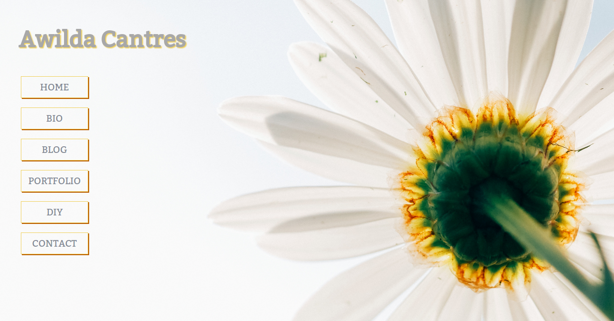

Building a personal website
October 18, 2015
The Sunday before beginning Phase 1, I find myself doing the final touch-ups on my personal website. I can't get enough of finally being able to implement most of my ideas into HTML and CSS to create a beautiful site. Since week 9 was a little on the light side, I decided to revamp my website to what you see now from this:
It's been a lot of fun although, I found myself trying new tactics whenever I became stuck. For example, I originally had a contact form in which I wanted to use some JavaScript with so anyone can send me an email. It was a bit challenging and time consuming so instead I went with an image of an envelope which can be clicked to send me an email. I know, that as I go on learning I will definitely implement back-end elements to my website as well as interactive features. For now, I hope you like my site and for the 2015 Bobolinks, I wish you all the best in phase 1.